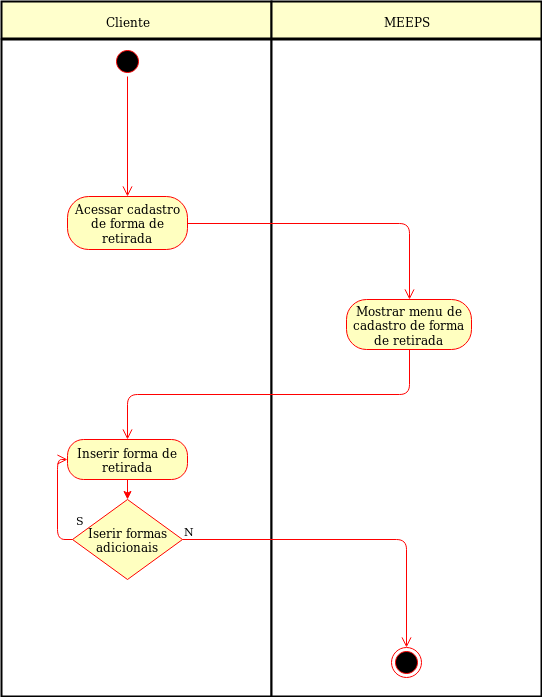

Cadastrar formas de retirada - UC020
O usuário vendedor deve poder informar ao sistema como seus produtos podem ser retirados
Ator:
Pré-condições
- O usuário deve estar logado
- O vendedor deve ter cadastrado produtos no sistema
Pós-condições
- O sistema pode disponibilizar aos usuários clientes a(s) forma(s) de reirada do produto
